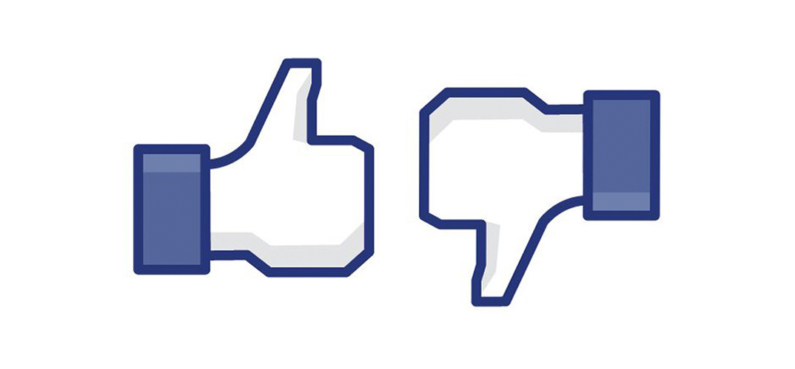

Conceito de Ética
A palavra ética vem do grego "ethos", que significa "costume", "caráter".
Refere-se ao conjunto de qualidades, positivas ou negativas, de uma pessoa, resultantes do exercício contínuo na vida em sociedade. A ética, portanto, orienta as ações humanas, diferenciando as boas práticas (virtudes) das ações inadequadas (vícios).

Diferença de moral e ética
A moral é o conjunto de normas que orientam o comportamento das pessoas, enquanto a ética é a análise crítica e reflexão sobre esses valores e princípios.
Os tipos de ética

Redes Sociais
Uma rede social é uma estrutura que conecta empresas ou indivíduos, inter-relacionando-os de acordo com suas preferências. Trata-se de uma forma de ligação e interação social entre pessoas.
A internet trouxe o mundo para dentro de nossas casas, assim como as redes sociais, que se tornaram parte do nosso cotidiano. A velocidade com que possibilita a comunicação é impressionante, permitindo-nos estar próximos de quem está distante.

A Ética nas Redes Sociais
As redes sociais, blogs e sites na internet são utilizados para diversos fins, como acompanhar notícias de celebridades, atuar no mundo dos negócios ou até mesmo causar controvérsias.
Embora as novas tecnologias ofereçam benefícios, como a formação de ideias, oportunidades de manifestação e disseminação de conhecimento, também trazem desafios, incluindo conflitos entre liberdade de expressão e a dignidade humana. Um simples comentário pode ter grande repercussão e gerar impactos significativos na vida das pessoas.

Conclusão
Embora possuir diversos benefícios nas redes sociais, a ética muitas vezes parece não acompanhar o ritmo da realidade, o que gera sofrimento e injustiças.
Novos padrões éticos precisam ser estabelecidos para definição de limites necessários.